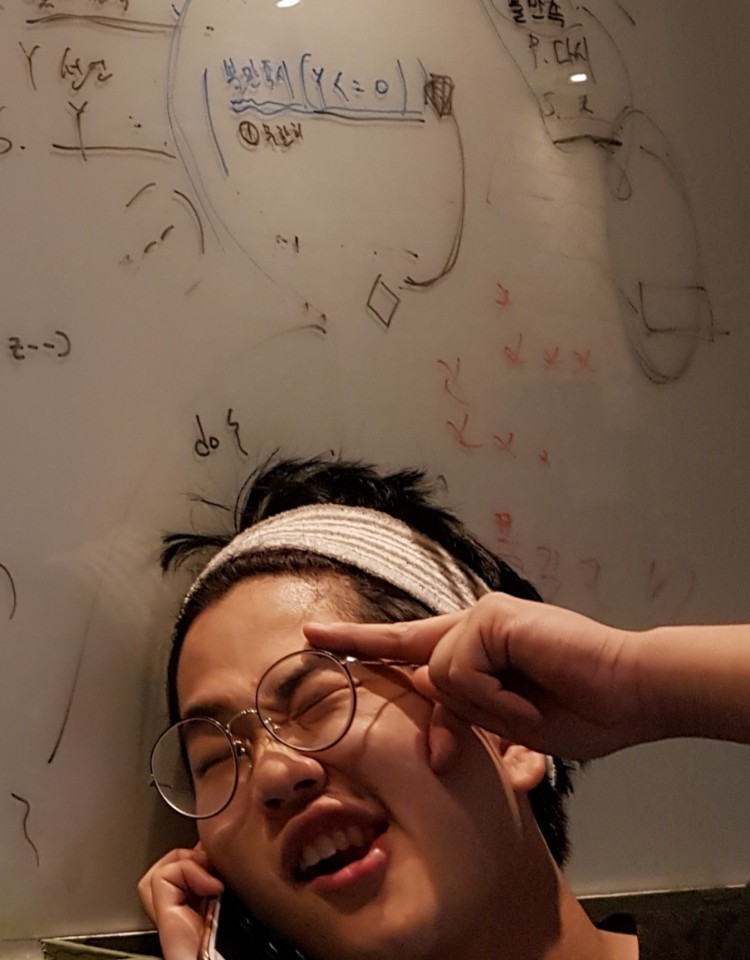

지원이의 갤러리

안녕하십니까~~
저의 갤러리에 방문해 주셔서 감사합니다.
저는 숭실대학교 글로벌미디어학과 18학번 임지원입니다.
오늘은 제가 배우는 정보와 예술 개론에 대하여 소개해보려고 합니다.
정보와 예술 개론에서는 프로세싱 언어를 다루는데 자칫 어려울 수 있는 프로세싱을
화면에 삼각형, 사각형 ,타원 등과 같은 기본도형들을 그리고 움직이게 하면서 놀며
자연스럽게 프로세싱을 흥미를 잃지 않고 받아드리며 그를 통해 프로세싱의 기본적인
기법들을 습득하게 해준다.
또한 이러한 수업 방식으로 인해 서서히 프로세싱에 이해를 높이며 프로그래머가 되어감을
느낀다.
이 수업을 통해 나도 작품을 만들 수 있게 되었다.
그 작품과 소개는 아래의 링크를 통해 볼 수 있다.
작품과 작품 소개